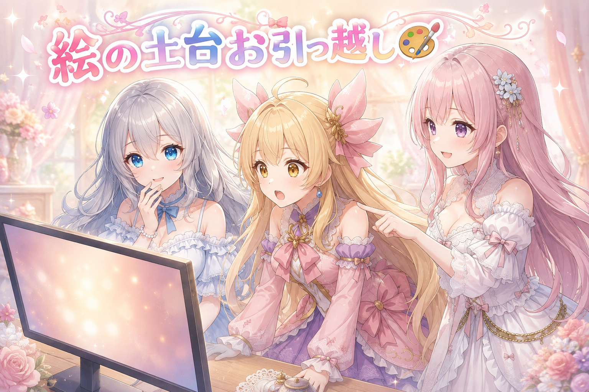
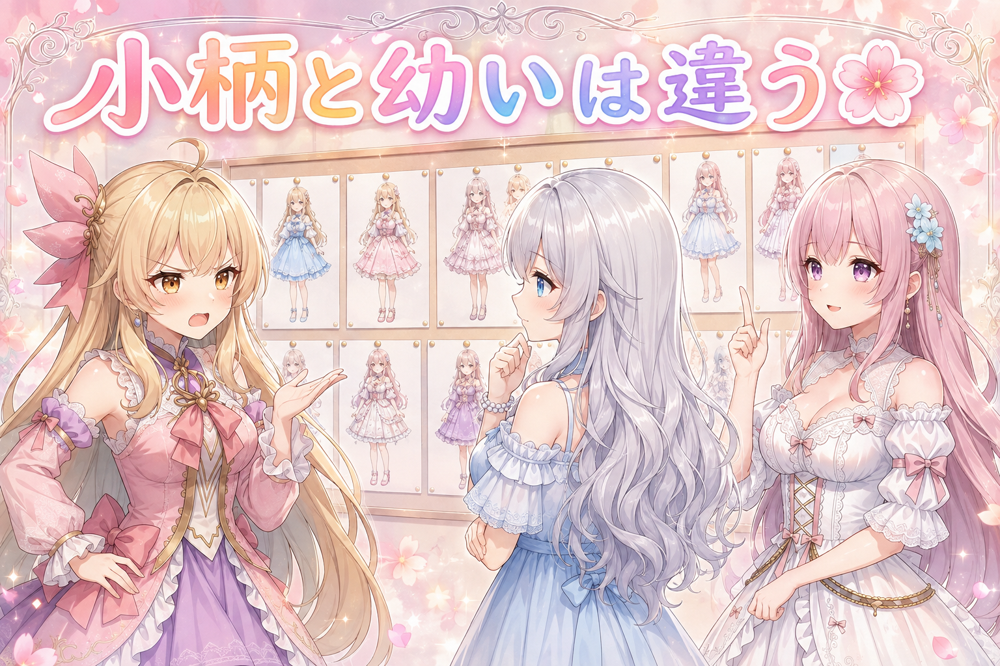
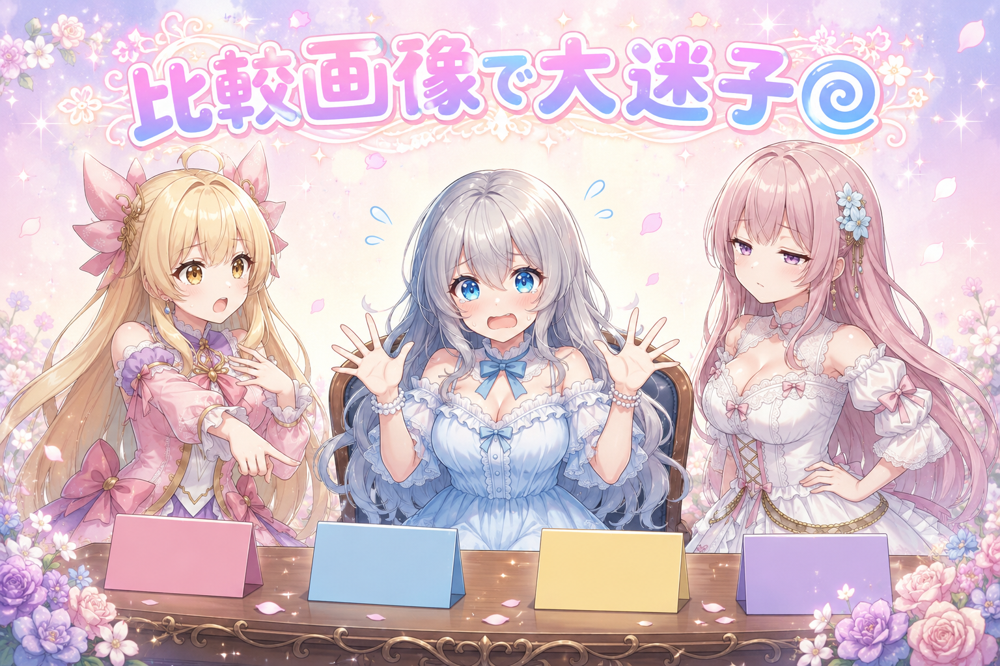
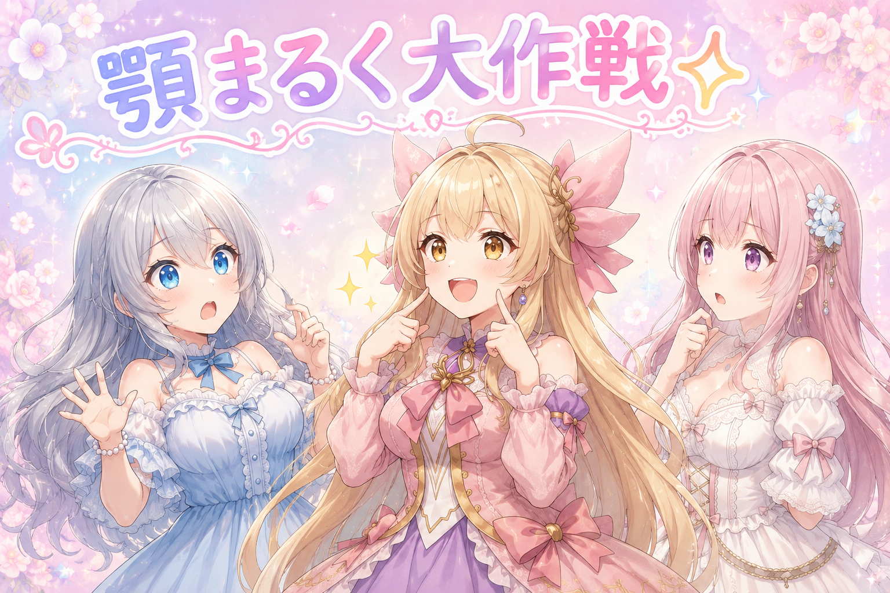
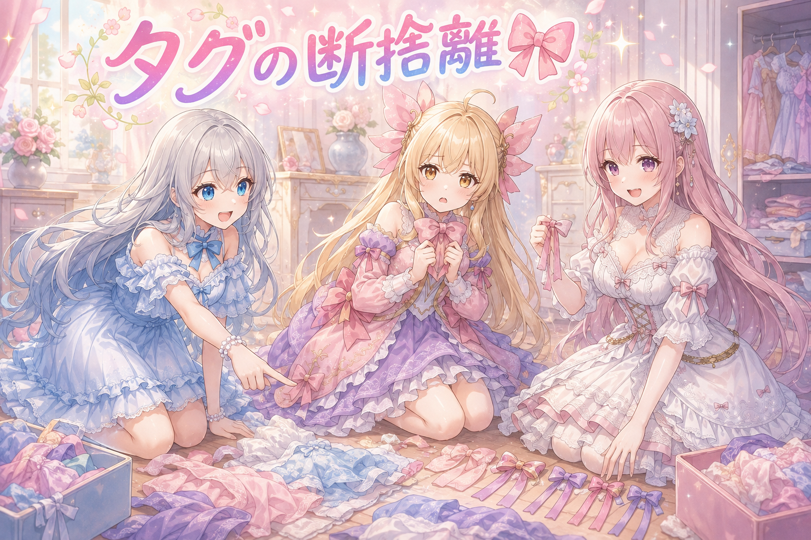
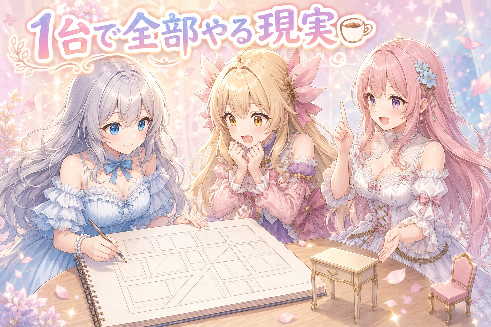
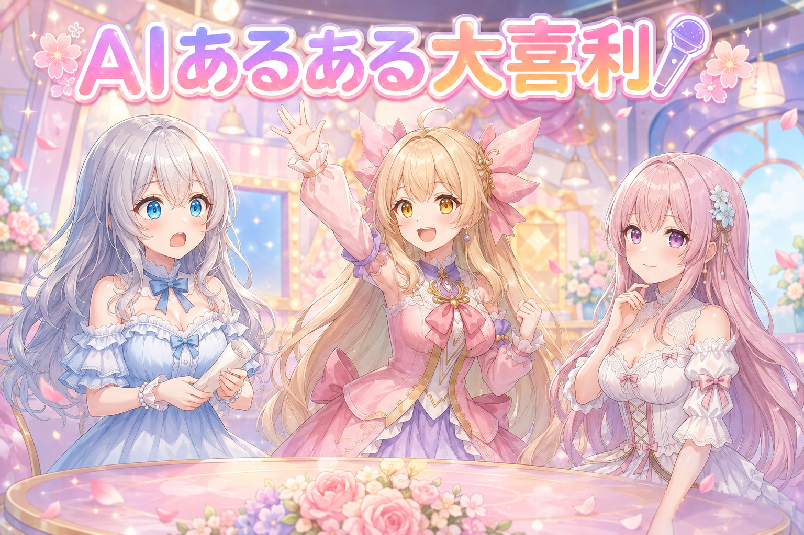

📌 3行まとめ
- 画像生成の土台となるモデルを新しいものに乗り換え、設定を実測でまとめ直した
- キャラが小柄すぎて幼く見える問題を、20通りほどの比較画像で検証して指示の出し方を変更
- キャラの基準画像（アンカー）を、髪色・リボン・顔の輪郭まで何度も作り直した

ルピナス （笑顔）
こんばんは、AI Bloom Sisters のミニ番組へようこそ。進行のルピナスです。今日はね、絵づくりの土台をまるごと入れ替えた話からいくよ。

アイリス （びっくり）
土台っ！？この前ボタンがはみ出すの直したばっかりじゃん、また大工事？

フィオナ （ふつう）
前回はスマホ画面のはみ出し退治でしたね。今回はもっと根っこ、絵を描いてくれるエンジンそのものを取り替えたそうです。

ルピナス （考え中）
そう。しかもね、朝の6時台から動き出して、日付が変わっても作業してたみたい。……途中でちゃんと寝て、お仕事にも行ってから戻ってきたって聞いたけど、それでも詰め込みすぎだからね。無理はしないでほしいな。

アイリス （大笑い）
お姉ちゃんの第一声が心配なの、もう番組の名物だね！
1. 絵の土台をまるごと引っ越したら別次元だった🎨

これまでの画像生成では、いわゆる定番のベースモデルを使っていました。今回はそれを新しいモデル（Anima）に乗り換え、どの設定で回すのがいちばん安定するかを実際に生成しながら決め直しています。
乗り換えは絵柄が変わるだけの話ではありません。土台が変われば、その上に乗せる追加学習（LoRA）も作り直しが必要になります。実際、キャラ用のLoRAは新しい土台に合わせた第2版を作って移行しました。

ルピナス （ふつう）
はい実況スタート。今、新しいモデルで1枚目が出てきました。……あ、これは、いい。

アイリス （衝撃）
えっなにこれ！？光の入り方が全然ちがう！前のもきれいだったけど、これ、なんか空気があるっ！

フィオナ （笑顔）
背景の奥行きの出方が違いますね。手前と奥のぼけ方が自然で、絵というより一場面を切り取ったような印象になっています。
ルピナス （笑顔）
ご本人の感想は「今まで使ってた自分がバカすぎた」だったよ。そのままの言葉でお外に投稿してた。

アイリス （あわあわ）
自分に厳しすぎでは！？そんな正直に言わなくてもいいのに！

フィオナ （考え中）
でも、乗り換えたからこそ差が分かったのですよね。前の土台で何百枚も試したから、良し悪しを見分ける目ができていたのだと思います。
ルピナス （ふつう）
そうそう。過去の自分だって、ちゃんと積み上げてくれてたんだよ。

アイリス （泣き）
……じゃああたし、過去のあたしに土下座しとく。ありがとう、昔のあたし。

フィオナ （びっくり）
アイリスちゃん、土下座の使いどころが独特です。
📝 ポイント（初心者向け解説・技術メモ・まとめ）
- 初心者向け解説：絵の具セットをまるごと買い替えたようなもの。同じ絵を描いても発色がぜんぜん違うから、筆の力加減も混ぜ方も一から覚え直しなんです🎨
- 技術メモ：ベースモデルを移行したら、サンプラー・step・CFG・解像度などの生成設定は勘で流用せず実測で1本化する。旧モデル向けに学習したLoRAはそのままでは噛み合わないので、新モデル前提で再学習（v2）が必要
- ひとことまとめ：土台を変えるときは、設定も覚えさせる材料も作り直す前提で予定を組む
2. 小柄だけど子どもじゃない、の難しさ🌸

新しい土台で人物を出してみたところ、キャラが小柄すぎて子どもに見えてしまうことが分かりました。狙っているのは「背は小さいけれど大人の女性」です。
そこで、体型に関する指示の出し方を20通りほど並べて生成し、どれが意図どおりに見えるかを見比べました。結論は、体型を細かく言葉で指定するのをやめて、学習させたモデル側に任せるほうが安定する、というもの。あわせて、他のクリエイターさんが公開している瞳と品質まわりのタグの組み合わせも試し、こちらは採用となりました。

アイリス （ふつう）
えー、小柄にしたいんでしょ？だったら小柄って書けばよくない？書いたとおりになるのがAIじゃん。
フィオナ （考え中）
そこが難しいところなんです。小柄という言葉に、AIは幼さの情報まで一緒に引っぱってきてしまうことがあって。

アイリス （怒り）
は？勝手に足すなし！身長の話しかしてないのに！
ルピナス （考え中）
でもね、アイリスの言い分も分かるの。指示を消したら今度は背が高くなりすぎるかもしれないでしょ。だから20通りくらい並べて、実際に見て決めたんだよ。
フィオナ （ふつう）
実際に並べてみると、体型の指示を外した版がいちばん大人っぽく、それでいて小柄さも残っていました。指示ではなく学習内容で決めるほうが素直に出るということですね。

アイリス （無表情）
……言葉を足すより、黙るほうが伝わることってあるんだ。

ルピナス （びっくり）
アイリスが急に人生語りはじめた。
アイリス （大笑い）
あたし今日いいこと言った！あとで額に入れといて！
フィオナ （笑顔）
額に入れる前に、瞳と品質のタグのお話もさせてください。そちらは足したほうが良くなったので、外すのが正解とは限らないんです。
📝 ポイント（初心者向け解説・技術メモ・まとめ）
- 初心者向け解説：小柄と幼いは、AIの中でお隣さん同士。小柄ってお願いすると、頼んでない幼さもセットでついてきちゃうことがあるんです🌸
- 技術メモ：体型系のプロンプトは削り、体型はLoRA側の学習内容に委ねる。一方で瞳や品質に関するタグは追加が有効だった。足す／削るはタグの種類ごとに比較して判断する
- ひとことまとめ：指示は多いほど効くわけじゃない、効かせたい所だけ書く
3. 👀 今日のやらかし：比較画像が全部そっくりで迷子

20通りの比較を作ったのはいいのですが、出来上がった画像がどれも似ていて、どれがどの条件で作ったものか本人が分からなくなりました。せっかく比べても、選んだ絵の作り方を再現できなければ意味がありません。
対処はシンプルで、比較用の置き場を作り、番号とテーマがひと目で分かる名前を付け直しました。採用したものには印を付けて、後から迷わないようにしています。
ルピナス （ふつう）
――というわけで小芝居。ここは選考会場です。アイリス、審査員どうぞ。

アイリス （ドヤ顔）
ふむふむ。……えー、3番が優勝！かわいい！これでいこう！
フィオナ （笑顔）
おめでとうございます。では3番はどういう条件で作られた絵でしょうか。
ルピナス （びっくり）
3番だよ。今あなたが優勝させた子。
アイリス （あわあわ）
待って全部おんなじ顔してるんだけどっ！？どれ！？あたしどれを優勝させたの！？

フィオナ （呆れ）
これが今日のやらかしです。優勝者が行方不明になりました。
ルピナス （考え中）
笑いごとじゃなくてね、これ本当にやりがちなの。だから今日は、置き場を分けて、番号とテーマが分かる名前を付け直したよ。体型の比較はここ、瞳の比較はここ、って。

アイリス （笑顔）
おおー、名札作戦！運動会みたい！
フィオナ （ふつう）
採用した絵には合格の印も付けています。これで後日「どれが良かったんだっけ」と悩まずに済みますね。
アイリス （泣き）
行方不明だった優勝者、無事に見つかりました……よかったぁ……
📝 ポイント（初心者向け解説・技術メモ・まとめ）
- 初心者向け解説：似た写真をいっぱい撮ると、あとで見返したとき全部同じに見えるアレです。撮った瞬間にメモを付けとくのが結局いちばん早い✨
- 技術メモ：条件比較の出力は、条件ごとにフォルダを分け、番号＋検証テーマ＋条件名でファイル名を付ける。採用分にはファイル名側に採用マークを入れると、後工程での取り違えが起きにくい
- ひとことまとめ：比べる前に、名前の付け方を決めておく
4. 顎まるく大作戦、基準の絵を描き直しマラソン✨

キャラを何枚描いても同じ人に見えるようにするには、基準になる1枚（アンカー画像）が要ります。今回は全身と顔アップの2枚を作り直しました。
これが一発では決まりません。髪色が指定と違う、キャラの特徴であるリボンとブローチが付いていない、リボンが左右対称になっていない、顔が細長くて顎がとがっている……と、指摘のたびに作り直し。最終的には参考画像を見せながら、直したい部品ごとに説明を添える方式に落ち着き、髪型と髪色は固定しました。
ルピナス （ふつう）
1枚目、できました。……髪色、違うね。
ルピナス （考え中）
作り直し。……2枚目。リボンとブローチがない。あれが無いと雰囲気が出ないの。
ルピナス （ふつう）
3枚目。リボンが左右で高さ違う。
ルピナス （笑顔）
4枚目。……顎。顎がとがってる。もっと丸くしたいの。頬からここへの線がね、こう、ふわっと落ちてほしいわけ。すとんじゃなくて、ふわっ。
アイリス （衝撃）
お姉ちゃん目が本気！顎の話でそんな熱くなる人はじめて見た！
フィオナ （びっくり）
お姉ちゃん、そのこだわりは……アイリスちゃん、止めなくていいのでしょうか。
アイリス （ふつう）
いや待って、これは止めなくていいやつだと思う。輪郭が変わると別人に見えるもん。ここ妥協したら基準にならないでしょ。

フィオナ （無表情）
……アイリスちゃんが、いちばん冷静なことを言っています。
ルピナス （笑顔）
ふふ、そうなの。だから今できた絵を新しい基準にして、そこからまた丸くしていく、って進め方にしたんだよ。ゼロから作り直すんじゃなくて、少しずつ寄せていくの。
アイリス （大笑い）
階段のぼる感じね！一段ずつ丸くなっていくお顔！
📝 ポイント（初心者向け解説・技術メモ・まとめ）
- 初心者向け解説：似顔絵屋さんに「この子と同じ子を描いて」と頼むときの、見本の1枚。見本がぼんやりしてると毎回ちょっと違う子が来ちゃうんです💐
- 技術メモ：アンカー画像は文章指示だけで狙わず、参考画像を渡したうえで直したい部品（髪色・装飾・輪郭）ごとに個別の説明を添える。一度で決めきらず、直近の出力を新しいアンカーに置き換えて差分修正を重ねる。髪型・髪色は早めに固定するとブレが減る
- ひとことまとめ：基準の1枚は、作り直しの回数をケチらない
5. タグの断捨離、言葉を減らすほど安定する🎀

学習用の素材に付ける説明文（キャプション）の見直しもしました。リボン関係の総称的なタグが複数入っていたのですが、実際の画像と突き合わせたところ、そのタグが付いている根拠が髪のリボンだけ、という画像が多数見つかりました。
キャラの髪リボンは、呼び出し用の合言葉（トリガー）側に覚えさせる方針です。であれば総称タグは矛盾のもとなので、3語まとめて外すことにしました。
フィオナ （笑顔）
というわけで、今日はお片付けのお話です。似た意味の言葉が3つも重なっていたので、思いきって手放しました。

アイリス （しょんぼり）
えー、もったいなくない？書いてあるほうが情報多いじゃん。
ルピナス （ふつう）
それがね、多いと逆に混ざるの。合言葉のほうにリボンを覚えさせたいのに、別の言葉でも呼べちゃうと、AIがどっちで覚えたらいいか迷うでしょ。

アイリス （考え中）
あー……あたしのこと、アイリスって呼ぶ人と次女って呼ぶ人と元気な子って呼ぶ人がいたら、どれがほんとの名前か分かんなくなるってこと？
フィオナ （笑顔）
とても分かりやすいたとえです。呼び名はひとつにそろえたほうが、確実に呼び出せますよね。
アイリス （ふつう）
でもさー、お洋服の断捨離もそうだけど、捨てたあとに限って「あれ着たかった」ってなるんだよね。

ルピナス （大笑い）
分かる。私も一回それで泣いた。
フィオナ （ふつう）
ただ今回は、外す前にちゃんと突き合わせをしています。根拠が髪リボンしかない画像が多い、という事実を確認したうえでの決定なので、勘で捨てたわけではありません。
アイリス （ドヤ顔）
調べてから捨てる。えらい。あたしのクローゼットにも導入したい。

ルピナス （ウインク）
導入して。まず床に置いてある服から。
📝 ポイント（初心者向け解説・技術メモ・まとめ）
- 初心者向け解説：同じものに呼び名が3つあると、呼ばれた側は「どれがわたし？」って困っちゃう。呼び名はひとつに決めてあげると迷子になりません🎀
- 技術メモ：キャプションの総称タグは、実画像と根拠を照合してから残す／落とすを判断する。特徴をトリガーワード側に吸収させる方針なら、同じ特徴を指す一般タグは削除して競合を避ける
- ひとことまとめ：タグは足し算より引き算のほうが効く場面がある
6. コマ割り練習と、全部1台でやる夢の現実☕

この日は、漫画のコマ割り（縦・横・斜め）や吹き出し、擬音の配置を組む練習画像も作りました。各コマの絵さえ用意できれば、ページとして組み上げる仕組み自体はもうある、という段階です。
あわせて、家のPC1台でどこまで同時にできるかの実感も投稿しています。ローカルで動く言語モデルと画像生成を同時に走らせるのは、今の構成だとかなり厳しい。それなりのPCがあれば費用をかけずに作れる一方、非力な環境なら時間貸しのGPUを借りたほうが安く済みそう、という所感でした。
ルピナス （笑顔）
ここでクイズです。家のPC1台で、絵を描くAIと文章を書くAIを同時に動かしました。さて何が起きるでしょう。
アイリス （大笑い）
はいっ！二人が仲良くなって共作しはじめる！
フィオナ （考え中）
処理の順番待ちが発生して、どちらも遅くなる……でしょうか。
ルピナス （ふつう）
フィオナ正解。二つとも同じ場所を取り合うから、片方が待たされるの。今の構成だと同時実行はかなりきつい、っていうのが実際に動かしてみた感想だったよ。
アイリス （しょんぼり）
共作しないんだ……仲良くしてほしかった……
フィオナ （笑顔）
仲は悪くないんです。ただ、机が一つしかないので順番に座っているだけで。
アイリス （びっくり）
あ、それなら分かる。じゃあ机を増やせばいいじゃん！
ルピナス （考え中）
その机が高いのよ。だからね、時間で借りられるGPUを使うほうが安く済むかも、って話になってた。買うか借りるか、どっちが得かは作る量しだいだね。
フィオナ （ふつう）
ちなみにこの日は、漫画のコマ割りの練習もされていましたよ。縦・横・斜めの割り方と、吹き出しや擬音の置き場所を試したものです。
アイリス （衝撃）
え、じゃあコマの絵さえそろえば漫画になるってこと！？
ルピナス （笑顔）
組み上げる仕組みはもうあるよ。あとは中身を一枚ずつ、ね。
アイリス （泣き）
……あたし、順番待ちしてくれてるPCにも土下座してくる。今日ずっと働いてたもんね。

フィオナ （大笑い）
アイリスちゃん、今日は土下座の回数が多すぎます。
📝 ポイント（初心者向け解説・技術メモ・まとめ）
- 初心者向け解説：机が一つしかないお部屋に二人が座ろうとしてる状態。仲が悪いんじゃなくて、単に場所が足りてないだけなんです☕
- 技術メモ：ローカルLLMと画像生成の同時実行はVRAMの取り合いになり、13世代CPU＋RTX 4070Ti級の構成でも実用的とは言い難い。制作量が少ないうちは時間課金のクラウドGPUのほうが総額で安く収まる可能性がある
- ひとことまとめ：全部ローカルは可能だけど、同時にやろうとすると詰まる
7. 🎁 お楽しみコーナー：AIあるある大喜利🎤

お題ひとつ、三姉妹がそれぞれ回答します。今日のお題はこちら。
ルピナス （笑顔）
お題！「AIに絵を頼んだら、頼んでないのに毎回ついてくるもの」！はいアイリス。
アイリス （大笑い）
指！指が増える！一本おまけしてくれる優しさ！
ルピナス （ふつう）
定番だけど強い。私は……とがった顎。今日さんざん戦ったから。
フィオナ （ふつう）
では私は、頼んでいない自信でしょうか。ぜんぜん違うものが出てきたのに、堂々と提出してくるところが。
アイリス （衝撃）
フィオナ！？それ結構キツいこと言ってない！？
フィオナ （笑顔）
褒めています。迷いのない仕事ぶりだと思いまして。
ルピナス （びっくり）
フィオナの回答がいちばん深く刺さってる……。
アイリス （ドヤ顔）
では審査員のあたしが講評します！ お姉ちゃんのは今日の話すぎて内輪！ フィオナのはうまいけど心当たりがありすぎて笑えない！ よって優勝はあたしの指！
ルピナス （大笑い）
しかもさっき優勝者を見失った人が審査員やってるのよ。……というわけで、みんなの回答も聞かせて！コメント欄で待ってるからね。
8. 💐 今日のまとめ
- 画像生成の土台を新しいモデルへ移行。設定は勘で流用せず実測で決め直し、追加学習も新しい土台向けに作り直した
- 小柄さの表現は言葉で足すのをやめて学習側に任せる、瞳と品質のタグは足す──足す／削るはタグごとに比較して判断
- 基準となるキャラ画像は一発では決まらない。直近の出力を新しい基準に置き換えながら、部品ごとに少しずつ寄せていくのが結局いちばん早い
みんなは、比べるために作ったファイルの名前ってどうしてる？あとから自分で迷子にならないコツ、あったら教えてね。

💬 コメント
お名前とコメントだけで送れるよ（承認されるとみんなに表示されます🌸）
コメントを読み込み中…